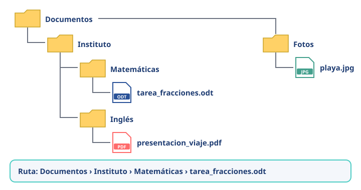

Módulo 8: Archivos y carpetas
Organizar bien tus archivos te ahorra mucho tiempo (y disgustos).
Informática básica · Módulo 8 de 12
Archivos, carpetas y rutas
Un archivo (o fichero) es un documento, foto, canción o programa guardado. Las carpetas sirven para agruparlos, y pueden contener otras carpetas. El camino hasta un archivo se llama ruta.

Una estructura ordenada y la ruta para llegar a un archivo.
La extensión: el «apellido» del archivo
Las letras después del punto indican el tipo de archivo y con qué programa se abre.
| Extensión | Tipo | Se abre con… |
|---|---|---|
| .odt / .docx | Documento de texto | LibreOffice Writer, Word |
| .ods / .xlsx | Hoja de cálculo | LibreOffice Calc, Excel |
| Documento para leer o imprimir | Navegador, lector de PDF | |
| .jpg / .png | Imagen | Visor de fotos |
| .mp3 | Audio | Reproductor de música |
| .mp4 | Vídeo | Reproductor de vídeo |
| .zip | Archivo comprimido | El propio sistema operativo |
| .exe | Programa de Windows | ⚠️ Solo si viene de una fuente de confianza |
Buenas costumbres
- 🗂️ Usa nombres claros:
tarea_fracciones_v2.odtmejor quedocumento1.odt. - 🗂️ Evita espacios raros, tildes y símbolos en los nombres si vas a compartir archivos: usa guiones bajos.
- 🗂️ Crea una carpeta por asignatura o proyecto.
- 🗂️ Vacía de vez en cuando la carpeta de Descargas.
- 🗂️ Lo que va a la Papelera aún se puede recuperar; al vaciarla, ya no.
Doble extensión = alarma. Un archivo llamado
notas.pdf.exe parece un PDF, pero es un programa. No lo abras.🧩 ¿Qué tipo de archivo es viaje.mp4?
🧩 Te llega un archivo llamado examen.pdf.exe. ¿Qué es en realidad?
✍️ Actividad: organiza tu estructura
Diseña la estructura de carpetas que usarías este curso (asignaturas, proyectos, fotos…).
Resumen: carpetas bien organizadas, nombres claros, fíjate en la extensión y desconfía de las dobles extensiones.